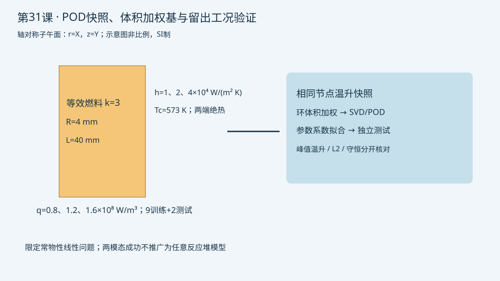

验证状态：已通过 MAPDL 求解
隔离MAPDL在两套网格完成11工况，外部加权POD只用9个训练点。2个留出点温升相对误差最大2.84e-10；插值点全阶峰值温升对解析误差由0.2803%降至0.0803%。两模态仅适用固定几何常物性线性问题，不宣称通用外推可靠性或总加速比。

2026-10-13；2026-10-13按用户请求补做。
今日目标
从固定网格的11个实际APDL稳态工况导出节点快照，并用配套pod_verify.py构建加权POD基和测试参数预测；不是把静态脚本宣称为在线降阶求解器。
物理问题与边界
沿用4 mm半径、40 mm长度的常物性均匀热源等效燃料棒，k=3 W/(m K)，端面绝热，外壁Tc=573 K。训练点为q∈{0.8,1.2,1.6}×10⁸ W/m³和h∈{10000,20000,40000} W/(m² K)的9个组合。留出点(1×10⁸,15000)及外推点(2×10⁸,5000)均不参与建基或系数拟合。
这个线性常物性问题的温升由常数和r²两种空间形状组成，因此两模态足以表达其参数变化并不代表复杂反应堆也只需要两模态。该例用于核对数据和误差链，不作为新方法论文或工程可靠性证明。
关键命令与数据契约
*DIM/*DO：明确9个训练点和2个测试点，禁止测试点混入训练。MSHKEY/AMESH：只建一次网格，所有工况使用相同节点号和坐标。BFE/SF：每个工况覆盖热源和对流；节点和元素都全选后解。ANTYPE,STATIC,NEW：11次独立稳态解，不是物理时间积分。*GET,COUNT/NDNEXT：逐个已选节点导出，支持编号不连续。*VWRITE：CSV七列依次为工况、q、h、节点号、r、z、T。- 外部
numpy.linalg.svd：只对前9个温升快照做加权SVD，不对绝对573 K基线直接做能量截断。
降阶验证链
配套脚本选取z=0截面的径向节点，以相邻节点中点划分环形控制体积，w=π(r右²−r左²)，对√W×(T−Tc)做SVD。按累计奇异值平方截断后，用训练参数特征(q,q/h)拟合模态系数并预测两个未见工况。这个非侵入系数拟合利用了本例解析结构，不是通用POD-Galerkin或DEIM求解器。
分别输出体积加权温升相对误差、峰值温升误差、外壁热平衡及有限元对解析解误差；训练/拟合误差与全阶离散误差分别报告。脚本记录预测耗时，但不声称端到端加速倍数，建网、11次求解、训练和验证都属于实际成本。
预期结果
温度应与Tc+qR/(2h)+q(R²−r²)/(4k)接近。固定几何材料下快照接近二维子空间；更改导热率为温度相关、加入间隙接触或瞬态状态后须重新建立验证范围。外推点通过只证明这个限定数学问题，不保证复杂模型外推安全。
验证清单
- 节点坐标顺序一致，全部快照有限值，CSV明确SI单位与参数来源。
- 9个训练工况和2个测试工况无数据泄漏；体积权重正且总和为πR²。
- 按温升检查误差，避免常数573 K掩盖误差；检查总生热与外壁散热。
- 网格0.25→0.125 mm核对全阶解析误差，降阶拟合精度不能替代网格收敛。
- 与未来结构场联用时增加峰值应力和接触压力误差；不能只检查温度L2误差。
常见错误
- 按原始节点编号拼接不同网格：先核对节点坐标或建立可信插值。
- 用全11列建基后再宣称独立测试：只使用前9列。
- 将99.9%模态能量当安全量误差界：单独核对峰值和守恒。
练习
只保留一个模态并比较两个测试点误差。扩展为温度相关导热、不同间隙状态的快照，规划分状态基或自适应基，并保留不参与训练的极端工况；不把蒙卡噪声直接当物理模态。
完整脚本
```apdl
/CLEAR,NOSTART ! 隔离工作目录；SI制m、W、K
/FILNAME,snap31 ! 快照独立前缀
/PREP7 ! 固定几何、网格和材料，避免不一致节点造成假模态
ET,1,PLANE55 ! 四节点热单元
KEYOPT,1,3,1 ! X径向，Y轴向，轴对称
rad=0.004 ! 等效燃料半径4 mm
alen=0.04 ! 棒段长度40 mm
kcond=3 ! 常导热率W/(m K)
tbulk=573 ! 冷却剂温度K
MP,KXX,1,kcond ! 教学等效燃料
RECTNG,0,rad,0,alen ! 圆柱子午面
MSHKEY,1 ! 映射四边形网格
MSHAPE,0,2D ! 二维四边形
ESIZE,0.00025 ! 固定名义网格0.25 mm
AMESH,ALL ! 一次建网，重复参数点不重建
ALLSEL,ALL ! 完整选择集
*DIM,qs,ARRAY,11 ! 九个训练点加两个独立测试点
*DIM,hs,ARRAY,11 ! 参数顺序与q数组严格一致
*DO,iq,1,3 ! 三个生热点0.8、1.2、1.6E8
*DO,ih,1,3 ! 三个换热系数10000、20000、40000
ii=(iq-1)*3+ih ! 训练工况编号1到9
qs(ii)=(0.4+0.4*iq)*1E8 ! 生热W/m3
hs(ii)=10000*2**(ih-1) ! 对流W/(m2 K)
*ENDDO ! 结束对流点
*ENDDO ! 结束生热点
qs(10)=1E8 ! 留出插值点，不参与建基和拟合
hs(10)=15000 ! 插值点对流
qs(11)=2E8 ! 超出训练q范围的压力测试
hs(11)=5000 ! 超出训练h范围；不据此保证任意外推
*CFOPEN,snapshots,csv ! 新目录导出11个工况全部节点
*DO,icase,1,11 ! 独立稳态工况，不是瞬态时间步
qvol=qs(icase) ! 当前生热W/m3
hcoef=hs(icase) ! 当前换热系数W/(m2 K)
BFE,ALL,HGEN,,qvol ! 覆盖全部燃料元素生热
NSEL,S,LOC,X,rad ! 外壁选择
SF,ALL,CONV,hcoef,tbulk ! 覆盖对流；两端绝热
ALLSEL,ALL ! 解和输出前全选
FINISH ! 前处理结束
/SOLU ! 当前稳态问题
ANTYPE,STATIC,NEW ! 新参数稳态求解，保留参数数组
OUTRES,ALL,ALL ! 保存热结果
SOLVE ! 实际有限元解
FINISH ! 求解结束
/POST1 ! 导出固定节点顺序
SET,LAST ! 当前工况结果
*GET,ncount,NODE,0,COUNT ! 已选择节点数量
*GET,nid,NODE,0,NUM,MIN ! 最小节点号，支持非连续编号
*DO,jn,1,ncount ! 每个节点恰好一次
*GET,xr,NODE,nid,LOC,X ! 径向坐标m
*GET,yz,NODE,nid,LOC,Y ! 轴向坐标m
*GET,tn,NODE,nid,TEMP ! 温度K
*VLEN,1 ! 每条输出一行，不向量扩展重复
*VWRITE,icase,qvol,hcoef,nid,xr,yz,tn ! 下一行七列纯格式
(F3.0,2(',',E17.10),',',F7.0,3(',',E17.10))
nid=NDNEXT(nid) ! 下一个已选节点号
*ENDDO ! 完成当前快照全部节点
FINISH ! 结束当前工况
/PREP7 ! 继续覆盖下一组热边界
*ENDDO ! 十一个快照完成
*CFCLOS ! 关闭快照表
FINISH ! SVD和未见工况验证在pod_verify.py完成
```
命令依据
- [Ansys官方命令说明](https://ansyshelp.ansys.com/public/Views/Secured/corp/v242/en/ans_elem/Hlp_E_PLANE55.html)
- [Ansys官方命令说明](https://ansyshelp.ansys.com/public/Views/Secured/corp/v242/en/ans_cmd/Hlp_C_LDREAD.html)
- [Ansys官方命令说明](https://ansyshelp.ansys.com/public/Views/Secured/corp/v242/en/ans_cmd/Hlp_C_ETCHG.html)
验证状态
隔离MAPDL在两套网格完成11工况，外部加权POD只用9个训练点。2个留出点温升相对误差最大2.84e-10；插值点全阶峰值温升对解析误差由0.2803%降至0.0803%。两模态仅适用固定几何常物性线性问题，不宣称通用外推可靠性或总加速比。
配套POD离线复现
需要Python 3和NumPy。先运行APDL获得snapshots.csv，再执行：
```text
python pod_verify.py snapshots.csv --out pod-result.json
```
也可用公开的真实径向截面快照直接复现：
```text
python pod_verify.py snapshot-profile.csv
```
- [POD验证脚本](pod_verify.py)
- [实际径向快照CSV](snapshot-profile.csv)
- [两套网格验证结果与边界](validation-summary.json)
完整 example.inp（逐行中文注释）
01/CLEAR,NOSTART ! 隔离工作目录；SI制m、W、K 02/FILNAME,snap31 ! 快照独立前缀 03/PREP7 ! 固定几何、网格和材料，避免不一致节点造成假模态 04ET,1,PLANE55 ! 四节点热单元 05KEYOPT,1,3,1 ! X径向，Y轴向，轴对称 06rad=0.004 ! 等效燃料半径4 mm 07alen=0.04 ! 棒段长度40 mm 08kcond=3 ! 常导热率W/(m K) 09tbulk=573 ! 冷却剂温度K 10MP,KXX,1,kcond ! 教学等效燃料 11RECTNG,0,rad,0,alen ! 圆柱子午面 12MSHKEY,1 ! 映射四边形网格 13MSHAPE,0,2D ! 二维四边形 14ESIZE,0.00025 ! 固定名义网格0.25 mm 15AMESH,ALL ! 一次建网，重复参数点不重建 16ALLSEL,ALL ! 完整选择集 17*DIM,qs,ARRAY,11 ! 九个训练点加两个独立测试点 18*DIM,hs,ARRAY,11 ! 参数顺序与q数组严格一致 19*DO,iq,1,3 ! 三个生热点0.8、1.2、1.6E8 20*DO,ih,1,3 ! 三个换热系数10000、20000、40000 21ii=(iq-1)*3+ih ! 训练工况编号1到9 22qs(ii)=(0.4+0.4*iq)*1E8 ! 生热W/m3 23hs(ii)=10000*2**(ih-1) ! 对流W/(m2 K) 24*ENDDO ! 结束对流点 25*ENDDO ! 结束生热点 26qs(10)=1E8 ! 留出插值点，不参与建基和拟合 27hs(10)=15000 ! 插值点对流 28qs(11)=2E8 ! 超出训练q范围的压力测试 29hs(11)=5000 ! 超出训练h范围；不据此保证任意外推 30*CFOPEN,snapshots,csv ! 新目录导出11个工况全部节点 31*DO,icase,1,11 ! 独立稳态工况，不是瞬态时间步 32qvol=qs(icase) ! 当前生热W/m3 33hcoef=hs(icase) ! 当前换热系数W/(m2 K) 34BFE,ALL,HGEN,,qvol ! 覆盖全部燃料元素生热 35NSEL,S,LOC,X,rad ! 外壁选择 36SF,ALL,CONV,hcoef,tbulk ! 覆盖对流；两端绝热 37ALLSEL,ALL ! 解和输出前全选 38FINISH ! 前处理结束 39/SOLU ! 当前稳态问题 40ANTYPE,STATIC,NEW ! 新参数稳态求解，保留参数数组 41OUTRES,ALL,ALL ! 保存热结果 42SOLVE ! 实际有限元解 43FINISH ! 求解结束 44/POST1 ! 导出固定节点顺序 45SET,LAST ! 当前工况结果 46*GET,ncount,NODE,0,COUNT ! 已选择节点数量 47*GET,nid,NODE,0,NUM,MIN ! 最小节点号，支持非连续编号 48*DO,jn,1,ncount ! 每个节点恰好一次 49*GET,xr,NODE,nid,LOC,X ! 径向坐标m 50*GET,yz,NODE,nid,LOC,Y ! 轴向坐标m 51*GET,tn,NODE,nid,TEMP ! 温度K 52*VLEN,1 ! 每条输出一行，不向量扩展重复 53*VWRITE,icase,qvol,hcoef,nid,xr,yz,tn ! 下一行七列纯格式 54(F3.0,2(',',E17.10),',',F7.0,3(',',E17.10)) 55nid=NDNEXT(nid) ! 下一个已选节点号 56*ENDDO ! 完成当前快照全部节点 57FINISH ! 结束当前工况 58/PREP7 ! 继续覆盖下一组热边界 59*ENDDO ! 十一个快照完成 60*CFCLOS ! 关闭快照表 61FINISH ! SVD和未见工况验证在pod_verify.py完成